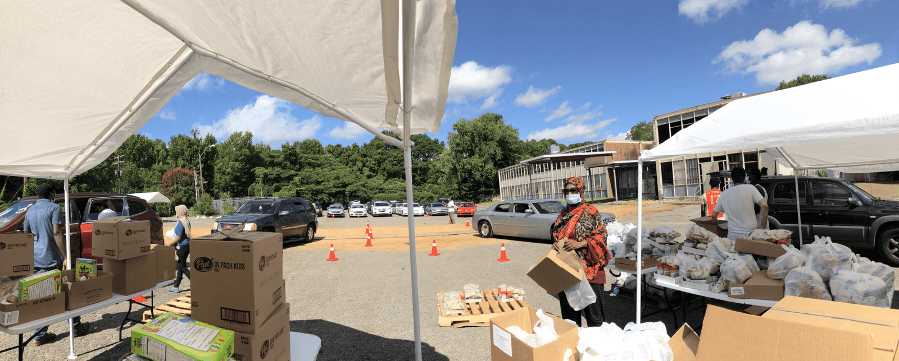

50,000+residents reached
300+families served in a typical pantry week
10+community programs
$200K2025 grower initiative
A community institution
Service is at the center of our kulliye.
The traditional kulliye brings worship, learning, nourishment, and public service together. In Whitehaven, that means responding to immediate needs while building pathways to health, skills, food security, and economic opportunity.
Our work has grown from community radio into a multi-service organization rooted in the people and neighborhoods of Memphis.
Our story and objectives →What we do
A practical network of local support.
Programs are designed around the needs of families, young people, growers, and neighbors across Whitehaven and Shelby County.
01 · Food access
02 · Economic opportunity
03 · Workforce
Mobile Food Pantry
Dependable food distributions for seniors, families, and households facing food insecurity.
Pantry information →MDA Microgrant Program
A $200,000 initiative supporting 25 small-scale Shelby County growers with awards of up to $8,000.
View the program →NextGen Builders
Hands-on pathways connecting young people with trades, mentorship, technical skills, and employment opportunity.
Explore services → 04 · Youth developmentRobotics & STEM
Practical learning that introduces middle- and high-school students to robotics, innovation, and technology.
Explore services → 05 · Food systemsUrban Farming & The Suq
Growing knowledge, local producers, and stronger access to healthy food through agriculture and a community market.
Visit The Suq → 06 · WellbeingHealth Workshops
Community health education and connections to trusted local health partners and resources.
Health resources → 07 · EducationIslamic & Academic Learning
Quranic studies, Islamic education, tutoring, lectures, youth support, and the Chinar Islamic Academy vision.
Education hub → 08 · Resource navigationCommunity Connections
Referrals and partnerships spanning legal support, literacy, safety, healthcare, technology, and civic services.
Partner directory →Local investment in action
Helping Shelby County growers build resilient futures.
In partnership with USDA and TIME Inc., MDA's 2025 Microgrant Program committed $200,000 to 25 small-scale growers. The program supported supplies, farm infrastructure, equipment, soil health, and climate-resilient practices.
$8,000maximum award25growers1 yearproject period
See the full programFor funders and public partners
Deep local roots. Clear pathways to scale.
MDA combines trusted neighborhood relationships, physical community assets, and a record of direct service that can support meaningful public investment.
Programs that grew with the neighborhood
- 2010 · Community radio launch
- 2013 · First community food pantry
- 2016 · Youth apprenticeship programming
- 2019 · Urban farming initiative
- 2022 · Multi-property kulliye expansion
One organization, connected needs
Food access, youth mentoring, workforce development, education, health, agriculture, faith, and community navigation work together instead of operating in isolation.
A platform for public impact
We welcome conversations with agencies, elected officials, schools, healthcare providers, nonprofits, businesses, and funders seeking a trusted Whitehaven partner.
Start a partnership conversation →Our local footprint
Two properties supporting one mission.
Our facilities give community programs, education, worship, and neighborhood collaboration a permanent home in Memphis.
Millbranch Road · Memphis
01 · Community property
Millbranch Property
A Memphis property being preserved and improved for long-term community use.
Property updates →Craft Road · Whitehaven
02 · Education & service campus
Othmaniyah Islamic Campus
The Craft Road campus brings education, food relief, local agriculture, worship, and service together.
Explore the campus →
Keep the work moving
Your support strengthens programs and the places behind them.
Donations help maintain our community properties and sustain the food, education, youth, and neighborhood services that take place through MDA.
Public agency, funder, or community organization?
Contact MDA leadership